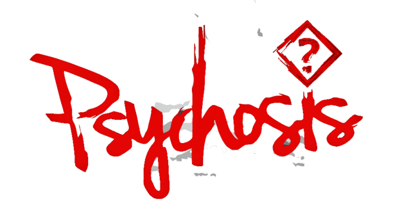

A Project by Akshat Madan
From the beginning we envisioned Psychosis as a method of tackling an intriguing problem: one that stretches across the boundaries of our imaginations and enables to display the highest levels of our technical skills.
Psychosis explores the far recesses of ones mind, morphing the in-game worlds into a story of discovery. Each time one plays, they discover more about themselves.
Delve into his mind: there is much to learn.
Download the latest development build:
Windows PC macOS